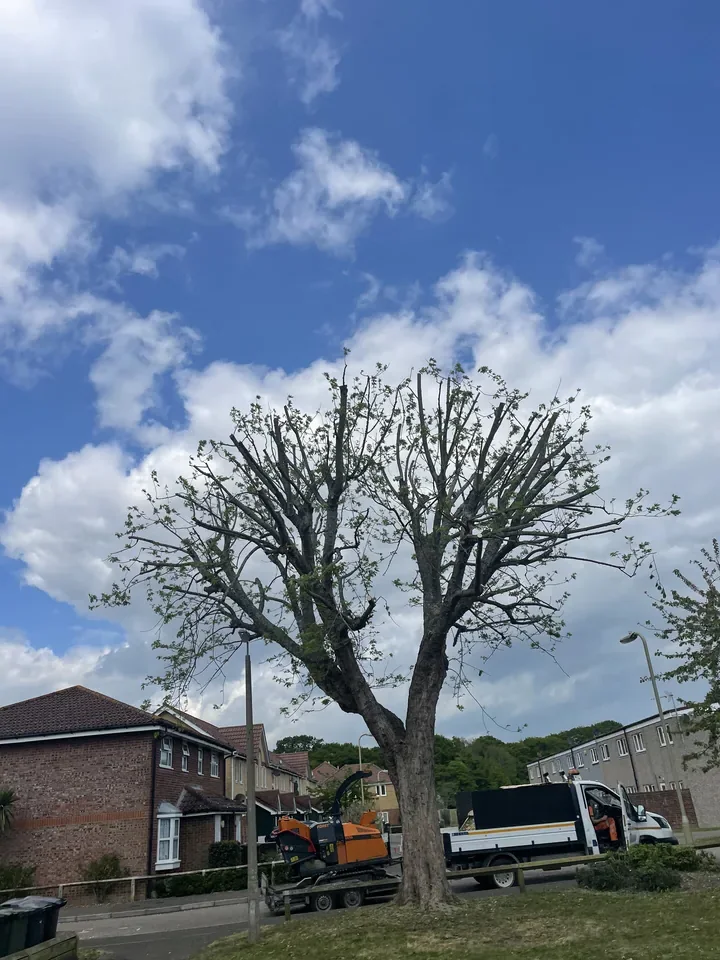

Services
Professional tree care, matched to the tree and the site.
Treevolution provides practical tree-care services across Lewes, Sussex and surrounding areas. Explore each service below, then contact us if you are unsure which approach is right.

01
Tree removal
Controlled removal when taking a tree down is the appropriate option.
Learn more →
02
Tree reduction & pruning
Careful crown work to manage size, shape, clearance and balance.
Learn more →
03
Pollarding
Planned pollarding and repeat management for suitable trees.
Learn more →
04
Hedge cutting
Practical hedge maintenance with clean lines and a tidy finish.
Learn more →
05
Stump removal
A practical finishing service after tree removal where appropriate.
Learn more →
06
Tree advice
Clear, practical recommendations based on the tree, site and work required.
Learn more →Not sure what you need?
Start with the tree, not the service name.
Send the location and a short description, and we can discuss the practical next step.